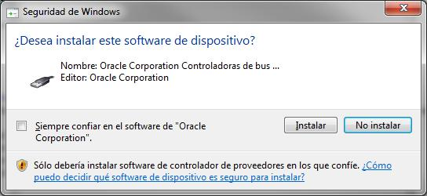
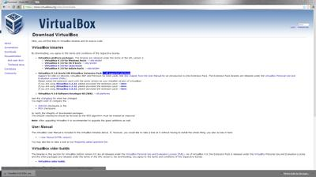
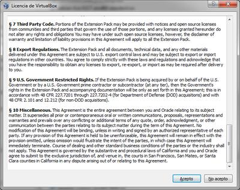
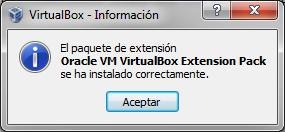
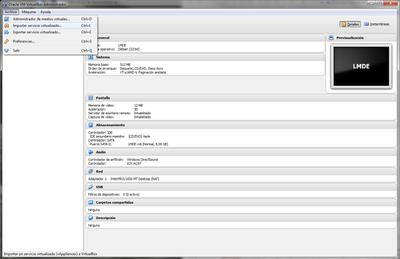
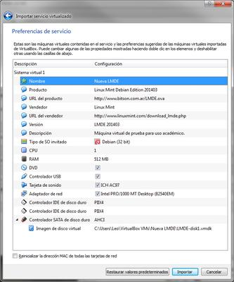

Objetivo: instalar VirtualBox para poder manejar máquinas virtuales e instalar la máquina virtual que vamos a usar a lo largo del curso.
Contents
Instalando una Máquina Virtual con VirtualBox
Instalar la nueva máquina virtual del curso consiste en 3 pasos:
- Instalar VirtualBox.
- Instalar el Pack de Extensiones de VirtualBox.
- Importar la Máquina Virtual del Curso.
Instalando VirtualBox
Para poder virtualizar máquinas en nuestro sistema necesitamos algún software que sepa cómo hacerlo. Hoy utilizaremos VirtualBox, un producto de Oracle. Su sitio oficial es https://www.virtualbox.org/. Para más información se puede consultar el manual oficial en línea en: https://www.virtualbox.org/manual/.

Para descargar el instalador, debemos ir a la sección de Downloads. Asumo que seguramente estarán viendo este tutorial desde una computadora con Windows. Por lo tanto tendrán que descargar el instalador de VirtualBox para anfitriones Windows (VirtualBox 5.X.X for Windows hosts). No importa la arquitectura de su procesador ya que el instalador funciona para 32 y para 64 bits.
{kind=link}
Cuando hagamos click sobre el link de descarga nos preguntará dónde queremos guardar el instalador. Por una cuestión de simpleza recomiendo dejarlo en la carpeta de Descargas.

Una vez concluida la descarga abrimos la carpeta donde descargamos el instalador y lo ejecutamos haciendo doble click sobre el mismo.

Cuando quieran ejecutar el archivo, al menos en Windows 7, seguramente les saldrá una advertencia de seguridad para ver si realmente quieren ejecutar el archivo. Para poder continuar con la instalación debemos darle al botón de Ejecutar.

Una vez completado esto, arranca el instalador. El instalador es un típico instalador de Windows... siguiente, siguiente, siguiente, ..., instalar. Y voilà! El programa queda instalado.
{kind=link}

{kind=link}
{kind=link}

Durante la instalación, saldrán algunos carteles. Según tu configuración del UAC (User Account Control, control de cuentas de usuario)

También para que nuestras máquinas virtuales tengan la posibilidad de conectarse a una red, VirtualBox necesita instalar un dispositivo virtual de controlador de red. Cuando el instalador quiera hacerlo les saldrá el aviso de si quieren instalar. Por supuesto que para continuar con la correcta instalación, deben aceptarlo. Si queremos, podemos tildar la opción de "Confiar en el software de Oracle Corporation" y no nos volverá a preguntar si deseamos instalarlo. Ya que, como hemos contestado que confiamos en ese software, procederá a instalar.
{kind=link}


Cuando termine de instalar los dispositivos, el instalador nos devolverá esta ventana para terminar la instalación y lanzar la aplicación.

Si por algún motivo cuando termina el instalador, lanzan la aplicación y le salta un cartel como el siguiente. Presionen sobre la opción "Este programa funciona correctamente". Es simplemente un tema de que Windows no reconoce la instalación inmediatamente después de instalado.

Finalizado todo esto, podemos observar a continuación la pantalla de bienvenida del VirtualBox. Este programa es el administrador de máquinas virtuales que nos permitirá controlar las máquinas que deseemos virtualizar.
{kind=link}
Instalando VirtualBox Extension Pack
Con el Extension Pack podremos tener soporte para dispositivos USB 2.0, el protocolo RDP (Remote Desktop Protocol) de VirtualBox y booteo por PXE para placas de red Intel. Para descargar el pack de extensiones debemos ir a la sección Downloads y ahí descargamos la segunda opción: VirtualBox` 5.X.X Oracle VM `VirtualBox` Extension Pack. Haciendo click sobre el link que dice All supported platforms, podremos descargar el archivo necesario para instalar las extensiones.
{kind=link}
Esto nos abrirá una nueva ventana de descarga donde nos invitará a descargar un archivo con extensión .vbox-extpack.
{kind=link}
Simplemente descargamos este archivo en alguna carpeta de nuestra computadora y una vez descargado hacemos doble click sobre el mismo.
{kind=link}
Se abrirá el administrador de máquinas virtuales y nos mostrará la Licencia de VirtualBox. La que debemos desplazar hasta el fondo para que se habilite el botón de Aceptar y obviamente aceptar para poder instalar.
{kind=link}
Aceptada la licencia, acorde a la configuración del UAC, nos preguntará si deseamos instalar.

Finalizada la instalación, nos informará con un cartel como el siguiente.
{kind=link}
Ya podemos disfrutar de nuestras extensiones! Veamos cómo importar nuestra primera VM para usarla a lo largo del curso.
Importando una VM
El proceso de importación de una VM es tan sencillo como abrir un documento de nuestro procesador de texto favorito. Lo único que debemos disponer es del administrador de máquinas virtuales y el archivo de la VM con formato .ova preferentemente.
En el administrador de máquinas virtuales, dentro del menú Archivo, encontraremos la opción "Importar servicio virtualizado..."
{kind=link}
Al seleccionar esta opción nos abrirá una ventana para indicarle la ubicación de nuestro archivo .ova. Si presionamos sobre el ícono de la carpeta nos permitirá explorar nuestra máquina real para indicarle en qué lugar está el archivo de la VM a importar. Una vez seleccionado el archivo, presionamos el botón Next.
{kind=link}

{kind=link}
Ahora nos muestra las preferencias de importación, en general no hace falta cambiar ningún parámetro. Simplemente le damos al botón Importar.
{kind=link}
En este momento el administrador de VM nos muestra la licencia que el que realizó la exportación escribió para nosotros. Debemos aceptarla sino no se importará la VM.
{kind=link}
Comienza el proceso de importación...
{kind=link}
Cuando se completa el proceso, tenemos la nueva máquina virtual recién importada en nuestra lista de VM.
{kind=link}